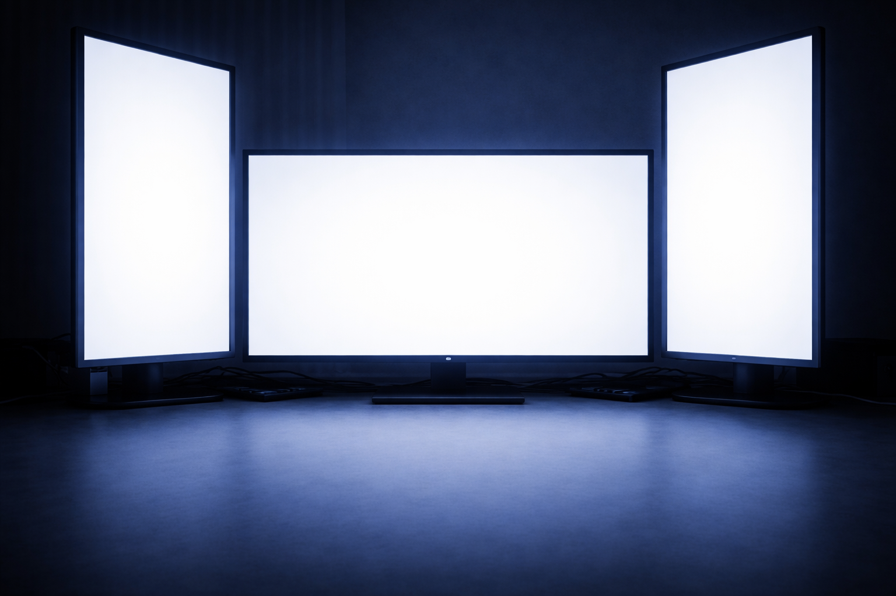
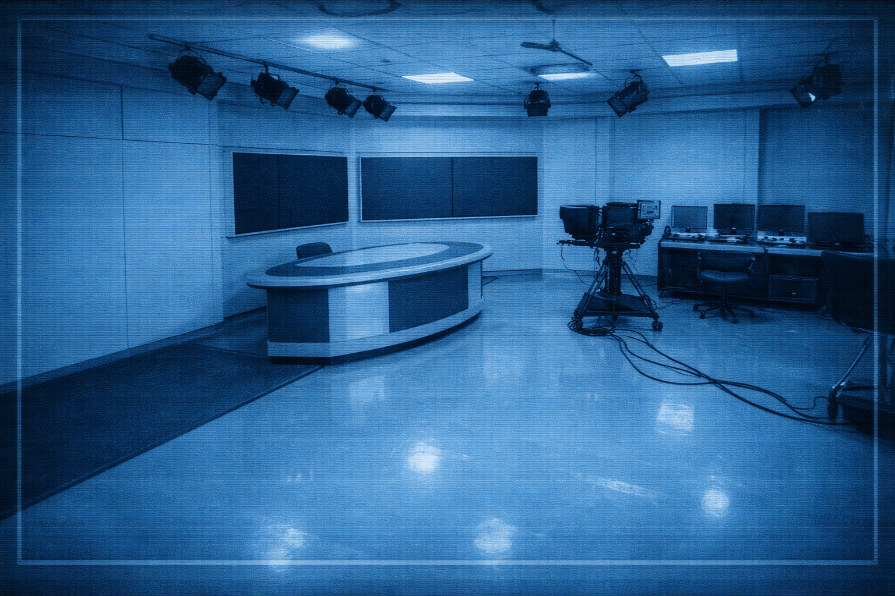

手を貸してあげようか？？
受け取る
受け取らない
2:00 AM - 3:00 AM
▶ broadcast_start
GAME OVER
RETRY
NIGHT 3 CLEAR
3:00 AM

POWER (Q)
LIGHT (A)
POWER (E)
LIGHT (D)
2:00 AM
Night 3
OPEN CAMERA (SPACE)

▼ DUCT CAMERA [W]
▲ BACK TO CAM [W]
CAM 1
● REC
CAM1
CAM2
CAM3
CAM4
CAM5
CAM6
CAM7
CAM8
CLOSE CAMERA (SPACE)
POWER:
100
%